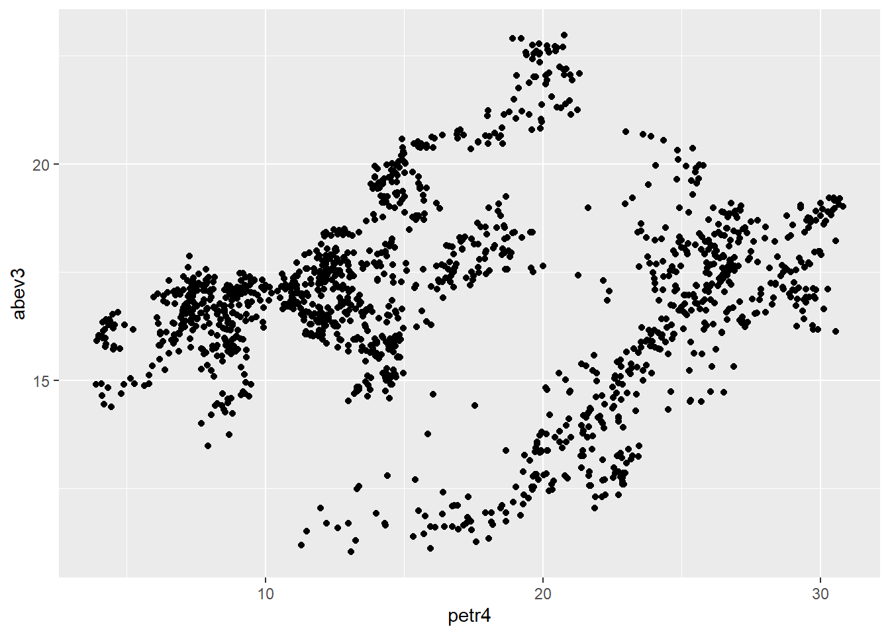
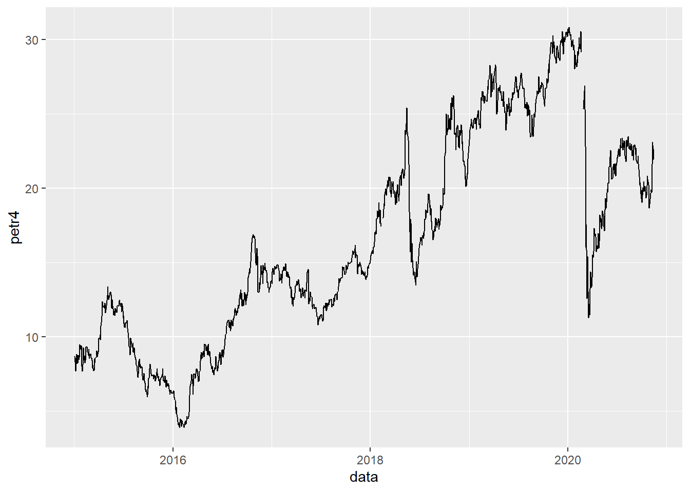
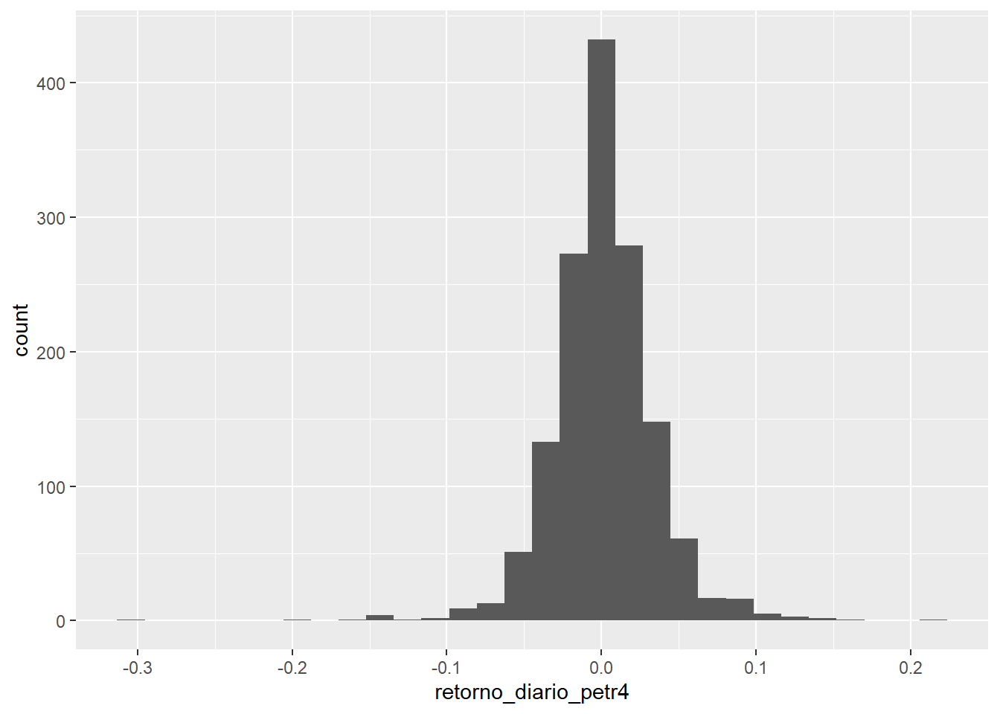

Capítulo 2 Novos passos com R {part2}
2.1 Leitura de arquivos csv
Para ler arquivos csv com o R, usamos o pacote readr, que faz parte do tidyverse.
Caso as colunas do arquivo que se deseja ler sejam separadas por vírgula, usa-se a função readr::read_csv(). Caso o separador seja ponto e vírgula (o padrão brasileiro), usa-se readr::read_csv2().
Vamos ler o arquivo de exemplo deste módulo:
## Warning: package 'tidyverse' was built under R version 4.0.2## -- Attaching packages --------------- tidyverse 1.3.0 --## v ggplot2 3.3.2 v purrr 0.3.4
## v tibble 3.0.1 v dplyr 1.0.0
## v tidyr 1.1.0 v stringr 1.4.0
## v readr 1.3.1 v forcats 0.5.0## Warning: package 'ggplot2' was built under R version 4.0.2## Warning: package 'tidyr' was built under R version 4.0.2## Warning: package 'readr' was built under R version 4.0.2## Warning: package 'dplyr' was built under R version 4.0.2## Warning: package 'forcats' was built under R version 4.0.2## -- Conflicts ------------------ tidyverse_conflicts() --
## x dplyr::filter() masks stats::filter()
## x dplyr::lag() masks stats::lag()## Parsed with column specification:
## cols(
## data = col_date(format = ""),
## petr4 = col_double(),
## abev3 = col_double(),
## retorno_diario_petr4 = col_double(),
## retorno_diario_abev3 = col_double()
## )2.2 Gráficos com ggplot2
O ggplot2 é uma poderosa ferramenta para fazer gráficos a partir de objetos da classe data.frame. Gráficos no R são um assunto bem extenso, e muito se poderia falar sobre o tema. Neste material, o pacote será apresentado de forma breve. Para um conteúdo mais abrangente sobre o tema, recomenda-se a leitura deste material.
2.2.1 Como usar o ggplot2:
Gráficos no ggplot são feitos nesta sintaxe:
2.2.2 Gráfico de dispersão ou gráfico de pontos
A sintaxe para se fazer um gráfico de pontos é:
## Warning: Removed 3 rows containing missing values (geom_point).
2.2.3 Gráfico de linha
A sintaxe para fazer um gráfico de linha é semelhante ao de pontos. Contudo, esse tipo de gráfico é mais usado quando a variável do eixo x é do tipo Date.

2.2.4 Histogramas
Os histogramas são utilizados para representar-se a distribuição de dados de uma variável quantitativa em intervalos contínuos. Esses intervalos são chamados de bins. Para cada bin, será apresentada a quantidade de valores que estão naquele intervalo.
No mercado financeiro, uma aplicação comum de histogramas é analisar a distribuição de retornos diários de um ativo:
## `stat_bin()` using `bins = 30`. Pick better value with `binwidth`.## Warning: Removed 7 rows containing non-finite values (stat_bin).
2.3 Trabalhando com datas
Datas são um caso a parte no R. Existe uma própria classe para objetos desse tipo, chamada Date, com D maiúsculo. O R lida com datas no formato AAAA-MM-DD (Ano, Mês e Dia).
Abaixo, definimos um vetor com datas
## [1] "2014-07-15" NA "2019-12-31" NA## [1] "Date"Perceba que o R nativamente não aceita qualquer separador entre o ano, o mês e o dia, apenas o traço. O pacote lubridate, que faz parte da família tidyverse, possui uma versão mais generalizável para isso:
## Warning: package 'lubridate' was built under R version 4.0.2##
## Attaching package: 'lubridate'## The following objects are masked from 'package:base':
##
## date, intersect, setdiff, union## [1] "2014-07-15" "2018-03-20" "2019-12-31" "2017-05-11"A propósito, dominar o pacote lubridate, que possui funções muito simples de usar, é a única coisa necessária para saber lidar com datas no R. Por isso, vamos mostrar as principais funções do pacote.
2.3.1 Gerar um vetor sequencial de datas
Essa tarefa é feita usando uma função nativa do R chamada seq.Date(), que possui quatro argumentos principais, sendo que três deles precisam ser especificados.
## function (from, to, by, length.out = NULL, along.with = NULL,
## ...)
## NULL# gerar vetor de datas separadas por mes
seq.Date(from = as_date("2020-01-01"),
to = as_date("2020-12-01"),
by = "1 month")## [1] "2020-01-01" "2020-02-01" "2020-03-01" "2020-04-01" "2020-05-01"
## [6] "2020-06-01" "2020-07-01" "2020-08-01" "2020-09-01" "2020-10-01"
## [11] "2020-11-01" "2020-12-01"# gerar vetor de datas separadas por dia
seq.Date(from = as_date("2020-01-01"),
to = as_date("2020-01-20"),
by = "1 day")## [1] "2020-01-01" "2020-01-02" "2020-01-03" "2020-01-04" "2020-01-05"
## [6] "2020-01-06" "2020-01-07" "2020-01-08" "2020-01-09" "2020-01-10"
## [11] "2020-01-11" "2020-01-12" "2020-01-13" "2020-01-14" "2020-01-15"
## [16] "2020-01-16" "2020-01-17" "2020-01-18" "2020-01-19" "2020-01-20"# gerar vetor de datas separadas por 3 dias
seq.Date(from = as_date("2020-01-01"),
to = as_date("2020-01-20"),
by = "3 day")## [1] "2020-01-01" "2020-01-04" "2020-01-07" "2020-01-10" "2020-01-13"
## [6] "2020-01-16" "2020-01-19"# gerar um vetor de 7 semanas separados por 1 semana
seq.Date(from = as_date("2020-01-01"),
length.out = 7,
by = "1 week")## [1] "2020-01-01" "2020-01-08" "2020-01-15" "2020-01-22" "2020-01-29"
## [6] "2020-02-05" "2020-02-12"2.4 ‘Parsear’ datas e horários
Para fazer o R converter (ou parsear na linguagem de programação) um string em data, basta usar as funções correspondentes do lubridate.
Por exemplo, no vetor de exemplo x, definido acima, as datas já estavam definidas no formato correto: AAAA-MM-DD. Aqui no Brasil usamos outro formato: DD/MM/AAAA. O lubridate possui uma função pronta para essa situação:
# observer como usamos diferentes separadores
datas_brasil <- c("01/12/2019", "20/11/2018", "30011990", "17-03-2000")
# parseando o vetor acima para Data
dmy(datas_brasil)## [1] "2019-12-01" "2018-11-20" "1990-01-30" "2000-03-17"Caso o vetor também contenha dados de horário, basta incluir o sufixo referente a hora, minuto e segundo:
## [1] "2019-09-30 14:51:39 UTC"## [1] "2019-09-30 14:15:00 UTC"## [1] "2019-09-30 15:00:00 UTC"2.5 Extrair componentes de uma data
É possível extrair qualquer tipo de componente de uma data ou de um vetor de datas com o lubridate. Veja alguns exemplos:
datas_brasil <- dmy_hms(c("01/12/2019 13:51:15", "20/11/2018 00:00:00", "30011990 080000", "17-03-2000 203000"))
datas_brasil## [1] "2019-12-01 13:51:15 UTC" "2018-11-20 00:00:00 UTC"
## [3] "1990-01-30 08:00:00 UTC" "2000-03-17 20:30:00 UTC"## [1] 2019 2018 1990 2000## [1] 12 11 1 3## [1] 1 20 30 17## [1] 48 47 5 11## [1] dom ter ter sex
## Levels: dom < seg < ter < qua < qui < sex < sáb## [1] 4 4 1 1## [1] 13 0 8 202.6 Operações matemáticas com datas
Geralmente se está interessado em fazer três tipos de operações matemáticas com datas:
- Adicionar uma quantidade N de dias/meses/anos/etc em uma data:
## [1] "2019-12-08 13:51:15 UTC" "2018-11-27 00:00:00 UTC"
## [3] "1990-02-06 08:00:00 UTC" "2000-03-24 20:30:00 UTC"## [1] "2020-02-29 13:51:15 UTC" "2019-02-18 00:00:00 UTC"
## [3] "1990-04-30 08:00:00 UTC" "2000-06-15 20:30:00 UTC"## [1] "2020-11-30 19:51:15 UTC" "2019-11-20 06:00:00 UTC"
## [3] "1991-01-30 14:00:00 UTC" "2001-03-18 02:30:00 UTC"- Calcular a diferença de tempo entre duas datas:
No R, subtrair datas segue a mesma sintaxe de subtrair números:
data1 <- dmy_hms("01/09/1993 20:00:00")
data2 <- dmy_hms("24-06-2018 17:00:00")
dif <- data2 - data1
dif## Time difference of 9061.875 daysPor padrão, o R retorna a diferença em dias, mas em um objeto de classe difftime.
## [1] "difftime"Recomenda-se então converter o output para a classe numeric:
## [1] 9061.875Caso se deseje calcular essa diferença em outras unidades de tempo, como meses ou semanas, basta fazer a divisão correspondente:
## [1] 1294.554## [1] 302.0625## [1] 24.82705- Arredondar datas:
Para arredondar uma data, por exemplo, retornar o primeiro ou último dia da semana/mês/trimestre/etc de uma data de referência, usa-se as funções ceiling_date() (arredondar para cima) e floor_date() (para baixo):
## [1] "2019-12-01 UTC" "2018-11-18 UTC" "1990-01-28 UTC" "2000-03-12 UTC"# retornar a ultima data do mês
# por padrao, ceiling_date retorna a primeira data do próximo mês,
# por isso é necessario subtrair o resultado por 1
ceiling_date(datas_brasil, "month") - 1## [1] "2019-12-31 23:59:59 UTC" "2018-11-30 23:59:59 UTC"
## [3] "1990-01-31 23:59:59 UTC" "2000-03-31 23:59:59 UTC"## [1] "2019-12-01 13:00:00 UTC" "2018-11-20 00:00:00 UTC"
## [3] "1990-01-30 08:00:00 UTC" "2000-03-17 20:00:00 UTC"2.7 If-else
A estrutura condicional é algo bastante intuitivo. A estrutura de if (se) e else (então) usa os operadores lógicos apresentados anteriormente. Se a condição do if() for verdadeira, executa-se uma tarefa específica, se for falsa, executa-se uma tarefa diferente. A estrutura parece algo do tipo:
if( variavel >= 500 ) {
#executa uma tarefa se operação resultar TRUE
} else {
#executa outra tarefa se operação resultar FALSE
}Da mesma forma, existe uma função que gera o mesmo resultado, o ifelse() (e uma do pacote dplyr, o if_else()).
Existe uma diferença entre as duas formas de “if else”: a estrutura if() {} else {} só opera variáveis, uma por uma, já a estrutura ifelse() opera vetores, ou seja, consegue fazer a comparação para todos os elementos. Isso faz com que a forma if() {} else {} seja mais utilizada para comparações fora dos dados, com variáveis avulsas. Já a estrutura ifelse() é mais usada para comparações dentro dos dados, com colunas, vetores e linhas.
Qualquer uma dessas estruturas pode ser “aninhada”, ou seja, encadeada. Por exemplo:
a <- 9823
if(a >= 10000) {
b <- 'VALOR ALTO'
} else if(a < 10000 & a >= 1000) {
b <- 'VALOR MEDIO'
} else if(a < 1000) {
b <- 'VALOR BAIXO'
}
b## [1] "VALOR MEDIO"Ou ainda:
a <- 839
c <- ifelse(a >= 10000, 'VALOR ALTO', ifelse(a < 10000 & a >= 1000, 'VALOR MEDIO', 'VALOR BAIXO'))
c## [1] "VALOR BAIXO"2.8 Loops
Trata-se de um dos conceitos mais importantes de qualquer linguagem de programação, em R não é diferente. Loops (ou laços) repetem uma sequência de comando quantas vezes você desejar, ou até que uma condição aconteça, variando-se alguns aspectos entre uma repetição e outra.
Supondo que você tenha que ler 400 arquivos de dados que você obteve de um cliente. Você vai escrever 400 vezes a funcão de leitura? Nesse caso, basta fazer um loop para percorrer todos os arquivos da pasta e ler um por um com a função de leitura.
O for() é usado para realizar uma série de ordens para uma determinada sequência ou índices (vetor). Sua sintaxe é bem simples:
## [1] 1
## [1] 4
## [1] 9
## [1] 16
## [1] 25Para cada valor (chamamos esse valor de i) dentro do vetor c(1, 2, 3, 4, 5), execute o comando print(i^2). Qualquer outro comando dentro das chaves { ... } seria executado para cada valor do vetor.
Para entendermos melhor, vamos repensar o exemplo das séries usando o for().
lista.de.arquivos <- list.files('dados/dados_loop') #lista todos os arquivos de uma pasta
is.vector(lista.de.arquivos)## [1] TRUEfor(i in lista.de.arquivos) {
print(paste('Leia o arquivo:', i))
#exemplo: read_delim(i, delim = "|")
}Também é possível utilizar loop com if. No exemplo a seguir, queremos ver todos os números de 1 a 1000 que são divisíveis por 29 e por 3 ao mesmo tempo. Para isso, utilizaremos o operador %%, que mostra o resto da divisão. Se o resto for zero, é divisível.
## [1] 87
## [1] 174
## [1] 261
## [1] 348
## [1] 435
## [1] 522
## [1] 609
## [1] 696
## [1] 783
## [1] 870
## [1] 9572.9 Criado suas próprias funções
Funções “encapsulam” uma sequência de comandos e instruções. É uma estrutura nomeada, que recebe parâmetros para iniciar sua execução e retorna um resultado ao final. Até o momento, você já usou diversas funções. Vejamos então como criar uma função:
sua_funcao <- function(parametro1, parametro2){
# sequência de tarefas
return(valores_retornados)
}
# chamada da função
sua_funcaoPor exemplo, vamos criar uma função que, dado uma série temporal de retornos, exibe algumas estatísticas:
analisar_retorno <- function(x){
# x é um nome qualquer que, no escopo da função, diz respeito ao objeto
# que será passado como input
print("Média: " )
print(mean(x))
print("Desvio padrão: ")
print(sd(x))
print("Mediana: ")
print(median(x))
}Vamos então aplicar às séries de retorno do nosso dataset:
## [1] "Média: "
## [1] NA
## [1] "Desvio padrão: "
## [1] NA
## [1] "Mediana: "
## [1] NAVeja que é necessário alterar o corpo da função para que as funções ignorem a presença de NAs nos dados.
analisar_retorno <- function(x){
# x é um nome qualquer que, no escopo da função, diz respeito ao objeto
# que será passado como input
print("Média: " )
print(mean(x, na.rm = TRUE))
print("Desvio padrão: ")
print(sd(x, na.rm = TRUE))
print("Mediana: ")
print(median(x, na.rm = TRUE))
}Agora sim:
## [1] "Média: "
## [1] 0.0002691528
## [1] "Desvio padrão: "
## [1] 0.01713899
## [1] "Mediana: "
## [1] 0## [1] "Média: "
## [1] 0.001309632
## [1] "Desvio padrão: "
## [1] 0.03378723
## [1] "Mediana: "
## [1] 0.0010141292.10 Listas
Nós já falamos sobre vetores, que são as principais estruturas unidimensionais de dados e que só aceitam elementos da mesma classe:
## [1] "character"O R também possui uma estrutura de dados que pode armazenar, literalmente, qualquer tipo de objeto: as listas, criadas com a função list().
No exemplo abaixo uma série de objetos de classes diferentes são armazenadas:
data_frame <- head(iris)
elemento_unico_inteiro <- 1
um_na <- NA
vetor_string <- letters[1:5]
minha_lista <- list(data_frame = data_frame,
elemento_unico_inteiro = elemento_unico_inteiro,
# este elemento abaixo não vai possuir um nome
um_na,
vetor_string = vetor_string)
# Conferindo o output:
minha_lista## $data_frame
## Sepal.Length Sepal.Width Petal.Length Petal.Width Species
## 1 5.1 3.5 1.4 0.2 setosa
## 2 4.9 3.0 1.4 0.2 setosa
## 3 4.7 3.2 1.3 0.2 setosa
## 4 4.6 3.1 1.5 0.2 setosa
## 5 5.0 3.6 1.4 0.2 setosa
## 6 5.4 3.9 1.7 0.4 setosa
##
## $elemento_unico_inteiro
## [1] 1
##
## [[3]]
## [1] NA
##
## $vetor_string
## [1] "a" "b" "c" "d" "e"Pelo output já percebemos que a maneira como extraímos um elemento de um vetor é diferente da de uma lista. No primeiro, usamos um par de colchetes ([]), no segundo usamos dois pares ([[]]) ou também cifrão ($), que só funciona caso o elemento da lista possua um nome.
## [1] 1## [1] "a" "b" "c" "d" "e"# o comando abaixo retorna NULL pq "um_na" não é um nome de
# nenhum elemento da lista
minha_lista$um_na## NULLA maneira mais produtiva de se usar listas em seus projetos é para automatizar a aplicação de uma determinada função (ou funções) para todos os elementos de uma lista. Suponha, por exemplo, que você precise importar dezenas de arquivos csv, fazer algumas limpezas e manipulações de dados, construir modelos de Machine Learning e depois salvar os resultados no computador. Seria muito tedioso fazer isso manualmente, mas é para esse tipo de operação que listas se tornam muito úteis.
O pacote purrr possui uma série de comandos para aplicar funções a elementos de uma lista. O R base até possui as funções da família apply (apply(), tapply(), lapply(), etc), mas estas estão entrando em desuso devido à adoção do purrr.
2.11 purrr::map
Nós já vimos que o R aplica uma função a cada elemento de um vetor de uma forma muito simples:
## [1] 1 3 5 10No caso de listas, não é bem assim que funciona:
## Error in abs(minha_lista): non-numeric argument to mathematical functionÉ necessário usar uma outra função para aplicar uma função a cada elemento da lista. É aqui que introduzimos a função map(), do pacote purrr. O primeiro argumento é a estrutura de dados sobre a qual se deseja iterar e o segundo é a função que será aplicada a cada elemento.
O pacote purrr faz parte do tidyverse.
## [[1]]
## [1] 1
##
## [[2]]
## [1] 3
##
## [[3]]
## [1] 5
##
## [[4]]
## [1] 10Veja a diferença no output:
## [1] "list"## [[1]]
## [1] "numeric"
##
## [[2]]
## [1] "numeric"
##
## [[3]]
## [1] "numeric"
##
## [[4]]
## [1] "numeric"De maneira genérica, é assim que são usados os parâmetros de map():
map(.x, .f, ...)
# ou
map(VETOR_OU_LISTA, FUNCAO_PARA_APLICAR, ARGUMENTOS_OPCIONAIS)
# que é equivalente a
VETOR_OU_LISTA %>% map(FUNCAO_PARA_APLICAR, ARGUMENTOS_OPCIONAIS)Existem duas maneiras de especificar a função para usar no map():
- Uma função existente
# definir uma lista composta por vetores
v <- list(v1 = c(1, 3, 5), v2 = c(2, 4, 6), v3 = c(7, 8, 9))
# aplicar a raiz quadrada a todos os vetores
map(v, sqrt)## $v1
## [1] 1.000000 1.732051 2.236068
##
## $v2
## [1] 1.414214 2.000000 2.449490
##
## $v3
## [1] 2.645751 2.828427 3.000000## $v1
## [1] 9
##
## $v2
## [1] 12
##
## $v3
## [1] 24- Uma função “anônima”, definida dentro da própria
map(). Veja que, emfunction(x)abaixo,xé como se fosse uma representação genérica de cada elemento da listav. Em inglês isso se chama placeholder.
## $v1
## [1] 1 9 25
##
## $v2
## [1] 4 16 36
##
## $v3
## [1] 49 64 81## $v1
## [1] 81
##
## $v2
## [1] 144
##
## $v3
## [1] 5762.12 Case 1
Dada série de preços de 2 ativos: f
* fazer gráfico com 2 ativos
* calcular série de variação de preços dos ativos (retorno aritimético) - fazer gráfico do retorno
* com retornos dos 2 ativos calcular série de índices (usando cumprod) para cada ativo - fazer gráfico comparando 2 ativos dá até pra criar uma série de taxa de juros fixa acumulada (simulando um CDI no período)
2.13 Case 2
Dada uma matriz de variação de preços de ativos calcular para cada ativo as estatísticas descritivas: média, desvio padrão, máximo, mínimo e mediana. Calcular o IBOVESPA: pegar, no site da B3, os ativos que constituem o IBOVESPA, os pesos e as cotações e calcular o valor do índice.